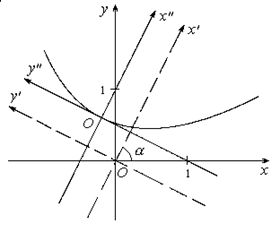

П 9 № 5
Привести к каноническому виду уравнение .
Решение
Система уравнений для нахождения центра кривой:  несовместна,значит, данная кривая
центра не имеет.
несовместна,значит, данная кривая
центра не имеет.
несовместна,значит, данная кривая
центра не имеет. Не меняя начала координат, повернем оси на некоторый угол  , соответствующие преобразования
координат имеют вид:
, соответствующие преобразования
координат имеют вид:
, соответствующие преобразования
координат имеют вид: Перейдем в уравнении к новым координатам:
(*)
Постараемся теперь подобрать угол так,
чтобы коэффициент при обратился в нуль.
так,
чтобы коэффициент при обратился в нуль. Для этого нам придется решить тригонометрическое уравнение
.
Имеем ,
или .
Отсюда , или .
Возьмем первое решение, что соответствует повороту осей на
острый угол.
Зная , вычислим и :
Отсюда, и учитывая , находим
уравнение данной кривой в системе  ,
, :
:
,:Дальнейшее упрощение уравнения производится
при помощи параллельного перенесения осей , .
Перепишем уравнение следующим
образом:
Дополнив выражение в первой скобке до полного квадрата
разности и компенсируя это дополнение надлежащим слагаемым, получим:
Введем теперь еще новые координаты ,
, полагая ,
,
что соответствует параллельному перемещению осей на величину в направлении оси и на величину в направлении оси . В координатах уравнение данной линии принимает вид
Это есть каноническое уравнение параболы с параметром и с вершиной в начале координат
системы . Парабола расположена симметрично
относительно оси и бесконечно простирается
в положительном направлении этой оси.
Координаты вершины в системе а в системе
